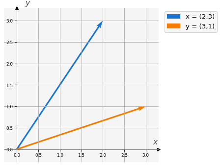
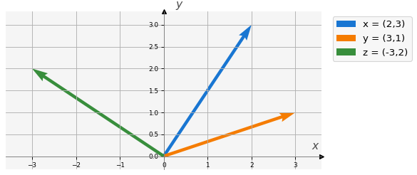

# Importamos las bibliotecas requeridas
import numpy as np
import macti.visual as mvis2 Producto escalar.
Objetivo. Revisar e ilustrar las propiedades del producto escalar en \(\mathbb{R}^n\), para \(n>=2\) usando la biblioteca numpy.
MACTI-Algebra_Lineal_01 by Luis M. de la Cruz is licensed under Attribution-ShareAlike 4.0 International


Trabajo realizado con el apoyo del Programa UNAM-DGAPA-PAPIME PE101922
2.1 Definición y propiedades.
Producto escalar es una operación algebraica que toma dos vectores y retorna un escalar. También se conoce como producto interno o producto punto. Su definición matemática es la siguiente:
\[ \langle \vec{x}, \vec{y} \rangle = \vec{y}^T \cdot \vec{x} = \sum_{i=1}^n x_i y_i \tag{1} \]
Propiedades: 1. \(\langle \vec{x}, \vec{y} \rangle = 0\) si y solo si \(\vec{x}\) y \(\vec{y}\) son ortogonales. 2. \(\langle \vec{x}, \vec{x} \rangle \ge 0\), además \(\langle \vec{x}, \vec{x} \rangle = 0\) si y solo si \(\vec{x} = 0\) 3. \(\langle \alpha \vec{x}, \vec{y} \rangle = \alpha \langle \vec{x}, \vec{y} \rangle\) 4. \(\langle \vec{x}+\vec{y}, \vec{z} \rangle = \langle \vec{x}, \vec{z} \rangle + \langle \vec{y}, \vec{z} \rangle\) 5. $, = , $ 6. Desigualdad de Schwarz : \(||\langle \vec{x}, \vec{y} \rangle|| \le ||\vec{x}|| ||\vec{y}||\)
En lo que sigue realizaremos ejemplos en \(\mathbb{R}^2\) de las propiedades antes descritas usando vectores (arreglos) construidos con la biblioteca numpy.
# Definimos dos vectores en R^2 usando numpy
x = np.array([2, 3])
y = np.array([3, 1])
# Imprimimos los vectores
print('x = {}'.format(x))
print('y = {}'.format(y))x = [2 3]
y = [3 1]# Visualizamos los vectores.
v = mvis.Plotter() # Definición de un objeto para crear figuras.
v.set_coordsys(1) # Definición del sistema de coordenadas.
v.plot_vectors(1, [x, y], ['x = (2,3)', 'y = (3,1)'], ofx=-0.1) # Graficación de los vectores 'x' y 'y'.
v.grid() # Muestra la rejilla del sistema de coordenadas.
2.2 Implementación.
En Python es posible implementar el producto escalar de varias maneras, a continuación presentamos algunas de ellas.
2.2.1 Usando el ciclo for.
Es posible hacer una implementación del producto escalar usando ciclos for. De acuerdo con la definición \(\langle \vec{x}, \vec{y} \rangle = \sum_{i=1}^n x_i y_i\) una implementación es como sigue:
dot_prod = 0.0
for i in range(len(x)):
dot_prod += x[i] * y[i]
print('for cycle → <x, y> = {:0.2f}'.format(dot_prod))for cycle → <x, y> = 9.002.2.2 Usando la función numpy.dot().
Esta función implementa un producto generalizado entre matrices cuyos elementos pueden ser flotantes o números complejos. Cuando se usa con arreglos de flotantes se obtiene el producto escalar. Usando esta función el ejemplo anterior se implementa cómo sigue:
dot_prod = np.dot(x,y)
print('np.dot → <x, y> = {:0.2f}'.format(dot_prod))np.dot → <x, y> = 9.002.2.3 Usando la función np.inner().
Esta función implementa el producto interno entre dos arreglos. Usando esta función el ejemplo anterior se implementa cómo sigue:
dot_prod = np.inner(x,y)
print('np.inner → <x, y> = {:0.2f}'.format(dot_prod))np.inner → <x, y> = 9.002.2.4 Usando el operador @ .
El operador @, disponible desde la versión Python 3.5, se puede usar para realizar la multiplicación de matrices convencional. Cuando se usa con arreglos de 1D se obtiene el producto escalar.
dot_prod = x @ y
print('Operador @ → <x, y> = {:0.2f}'.format(dot_prod))Operador @ → <x, y> = 9.00Lo conveniente es usar el operador @ o alguna de las funciones de biblioteca que ya están implementadas, como dot() o inner() y evitar la implementación usando el ciclo for. La razón es que la biblioteca Linear algebra, cuando es posible utiliza la biblioteca BLAS optimizada.
En lo que sigue usaremos el operador @ para calcular el producto escalar y probar las propiedades descritas al principio.
2.3 Propiedad 1: Ortogonalidad.
# Definimos otro vector en R^2
z = np.array([-3, 2])# Calculamos el producto escalar entre los vectores x, y, z
print('<x, y> = {:>5.2f}'.format(x @ y))
print('<x, z> = {:>5.2f}'.format(x @ z))
print('<z, y> = {:>5.2f}'.format(z @ y))<x, y> = 9.00
<x, z> = 0.00
<z, y> = -7.00Como se puede observar, solo el producto \(\langle \vec{x}, \vec{z} \rangle = 0\), lo cual significa que son ortogonales. Veamos los vectores gráficamente:
v = mvis.Plotter() # Definición de un objeto para crear figuras.
v.set_coordsys(1) # Definición del sistema de coordenadas.
v.plot_vectors(1, [x, y, z], ['x = (2,3)', 'y = (3,1)', 'z = (-3,2)'],ofx=-0.2) # Graficación de los vectores 'x' y 'y'.
v.grid() # Muestra la rejilla del sistema de coordenadas.
La función calc_angle(a, b), definida en la siguiente celda, calcula el ángulo entre los vectores \(\vec{a}\) y \(\vec{b}\) utilizando la siguiente fórmula
\[ \cos(\alpha) = \dfrac{\langle \vec{a}, \vec{b} \rangle}{||\vec{a}|| \; || \vec{b}||} \Longrightarrow \alpha = \arccos \left(\dfrac{\langle \vec{a}, \vec{b} \rangle}{||\vec{a}|| \; || \vec{b}||} \right) \]
Se usan las funciones np.linalg.norm() que calcula la norma de un vector, np.arccos() que es la función inversa del coseno y la constante np.pi que proporciona el valor de \(\pi\).
def calc_angle(a, b):
return np.arccos(a @ b / (np.linalg.norm(a) * np.linalg.norm(b))) * 180 / np.pi# Calculamos el ángulo entre los vectores x, y, z
print('Ángulo entre x y y : {}'.format(calc_angle(x, y)))
print('Ángulo entre x y z : {}'.format(calc_angle(x, z)))
print('Ángulo entre z y y : {}'.format(calc_angle(z, y)))Ángulo entre x y y : 37.8749836510982
Ángulo entre x y z : 90.0
Ángulo entre z y y : 127.8749836510982Observamos que efectivamente el ángulo entre \(\vec{x}\) y \(\vec{z}\) es de \(90^o\).
2.4 Propiedad 2. \(\langle \vec{x}, \vec{x} \rangle \ge 0\)
Verficamos que se cumple para los vectores \(\vec{x}\), \(\vec{y}\) y \(\vec{z}\):
print('<x, x> = {:>5.2f}'.format(x @ x))
print('<y, y> = {:>5.2f}'.format(y @ y))
print('<z, z> = {:>5.2f}'.format(z @ z))<x, x> = 13.00
<y, y> = 10.00
<z, z> = 13.002.5 Propiedad 3. Multiplicación por un escalar.
\(\langle \alpha \vec{x}, \vec{y} \rangle = \alpha \langle \vec{x}, \vec{y} \rangle\)
# Definimos un escalar
α = 1.5
print('<α * x, y> = {}'.format((α * x) @ y))
print('α * <x, y> = {}'.format(α * x @ y))
print(' ¿ <α * x, y> == α * <x,y> ? : {}'.format(np.isclose((α * x) @ y, α * x @ y)))<α * x, y> = 13.5
α * <x, y> = 13.5
¿ <α * x, y> == α * <x,y> ? : True2.6 Propiedad 4. Asociatividad.
\(\langle \vec{x}+\vec{y}, \vec{z} \rangle = \langle \vec{x}, \vec{z} \rangle + \langle \vec{y}, \vec{z} \rangle\)
print(' <x + y, z> = {}'.format((x + y) @ z))
print('<x, z> + <y, z> = {}'.format(x @ z + y @ z))
print(' ¿ <x + y, z> == <x, z> + <y, z>? : {}'.format(np.isclose((x + y) @ z, x @ z + y @ z))) <x + y, z> = -7
<x, z> + <y, z> = -7
¿ <x + y, z> == <x, z> + <y, z>? : True2.7 Propiedad 5. Conmutatividad.
$, = , $
print('<x, y> = {}'.format(x @ y))
print('<y, x> = {}'.format(y @ x))
print(' ¿ <x, y> == <y, x> ? : {}'.format(np.isclose(x @ y, y @ x)))<x, y> = 9
<y, x> = 9
¿ <x, y> == <y, x> ? : True2.8 Propiedad 6. Desigualdad de Schwarz.
\(||\langle \vec{x}, \vec{y} \rangle|| \le ||\vec{x}|| ||\vec{y}||\)
print('||<x, y>|| = {}'.format(np.abs(z @ y)))
print('||x|| ||y||= {}'.format(np.linalg.norm(z) * np.linalg.norm(y)))
print('¿||<x, y>|| ≤ ||x|| ||y||? : {}'.format( np.abs(z @ y) <= np.linalg.norm(z) * np.linalg.norm(y)))||<x, y>|| = 7
||x|| ||y||= 11.40175425099138
¿||<x, y>|| ≤ ||x|| ||y||? : True2.9 Ejercicio 1.
Definimos los siguientes vectores \(\vec{x} = (3.5, 0, -3.5, 0)\), \(\vec{y} = (1.5, 1.0, 2.3, -1.0)\) y \(\vec{z} = (1.0, 1.0, 1.0, 1.0)\) en \(\mathbb{R}^4\) y \(\alpha = 0.5\) un escalar. Verifica que se cumplen las propiedades 1 a 6.
Hint. Define los vectores \(\vec{x}\), \(\vec{y}\) y \(\vec{z}\) usando numpy y posteriormente copia los códigos utilizados en el ejemplo de \(\mathbb{R}^2\) para cada propiedad.
Obervación. En este caso no es posible realizar gráficas.
Definición de los vectores.
Deberías obtener un resultado como el siguiente al imprimir los tres vectores:
x = [ 3.5 0. -3.5 0. ]
y = [ 1.5 1. 2.3 -1. ]
z = [1. 1. 1. 1.]### Definición de los vectores en R^4 con numpy
### BEGIN SOLUTION
x = np.array([3.5, 0, -3.5, 0])
y = np.array([1.5, 1.0, 2.3, -1.0])
z = np.array([1.0, 1.0, 1.0, 1.0])
print('x = {}'.format(x))
print('y = {}'.format(y))
print('z = {}'.format(z))
### END SOLUTIONx = [ 3.5 0. -3.5 0. ]
y = [ 1.5 1. 2.3 -1. ]
z = [1. 1. 1. 1.]Propiedad 1.
El resultado debería ser:
<x, y> = -2.80
<x, z> = 0.00
<z, y> = 3.80# Calculamos el producto escalar entre los vectores x, y, z
### BEGIN SOLUTION
print('<x, y> = {:>5.2f}'.format(x @ y))
print('<x, z> = {:>5.2f}'.format(x @ z))
print('<z, y> = {:>5.2f}'.format(z @ y))
### END SOLUTION<x, y> = -2.80
<x, z> = 0.00
<z, y> = 3.80Propiedad 2.
El resultado debería ser:
<x, x> = 24.50
<y, y> = 9.54
<z, z> = 4.00### BEGIN SOLUTION
print('<x, x> = {:>5.2f}'.format(x @ x))
print('<y, y> = {:>5.2f}'.format(y @ y))
print('<z, z> = {:>5.2f}'.format(z @ z))
### END SOLUTION<x, x> = 24.50
<y, y> = 9.54
<z, z> = 4.00Propiedad 3.
El resultado debería ser:
<α * x, y> = -1.3999999999999997
α * <x, y> = -1.3999999999999997
¿ <α * x, y> == α * <x,y> ? : True# Definimos un escalar
### BEGIN SOLUTION
α = 0.5
print('<α * x, y> = {}'.format((α * x) @ y))
print('α * <x, y> = {}'.format(α * x @ y))
print(' ¿ <α * x, y> == α * <x,y> ? : {}'.format(np.isclose((α * x) @ y, α * x @ y)))
### END SOLUTION<α * x, y> = -1.3999999999999995
α * <x, y> = -1.3999999999999995
¿ <α * x, y> == α * <x,y> ? : TruePropiedad 4.
El resultado debería ser:
<x + y, z> = 3.8
<x, z> + <y, z> = 3.8
¿ <x + y, z> == <x, z> + <y, z>? : True### BEGIN SOLUTION
print(' <x + y, z> = {}'.format((x + y) @ z))
print('<x, z> + <y, z> = {}'.format(x @ z + y @ z))
print(' ¿ <x + y, z> == <x, z> + <y, z>? : {}'.format(np.isclose((x + y) @ z, x @ z + y @ z)))
### END SOLUTION <x + y, z> = 3.8
<x, z> + <y, z> = 3.8
¿ <x + y, z> == <x, z> + <y, z>? : TruePropiedad 5.
El resultado debería ser:
<x, y> = -2.7999999999999994
<y, x> = -2.7999999999999994
¿ <x, y> == <y, x> ? : True### BEGIN SOLUTION
print('<x, y> = {}'.format(x @ y))
print('<y, x> = {}'.format(y @ x))
print(' ¿ <x, y> == <y, x> ? : {}'.format(np.isclose(x @ y, y @ x)))
### END SOLUTION<x, y> = -2.799999999999999
<y, x> = -2.799999999999999
¿ <x, y> == <y, x> ? : TruePropiedad 6.
El resultado debería ser:
||<x, y>|| = 3.8
||x|| ||y||= 6.1773780845922
¿||<x, y>|| ≤ ||x|| ||y|? : True### BEGIN SOLUTION
print('∥<x, y>∥ = {}'.format(np.abs(z @ y)))
print('∥x∥∥y∥= {}'.format(np.linalg.norm(z) * np.linalg.norm(y)))
print('¿∥<x, y>∥ ≤ ∥x∥ ∥y∥? : {}'.format( np.abs(z @ y) <= np.linalg.norm(z) * np.linalg.norm(y)))
### END SOLUTION∥<x, y>∥ = 3.8
∥x∥∥y∥= 6.1773780845922
¿∥<x, y>∥ ≤ ∥x∥ ∥y∥? : True